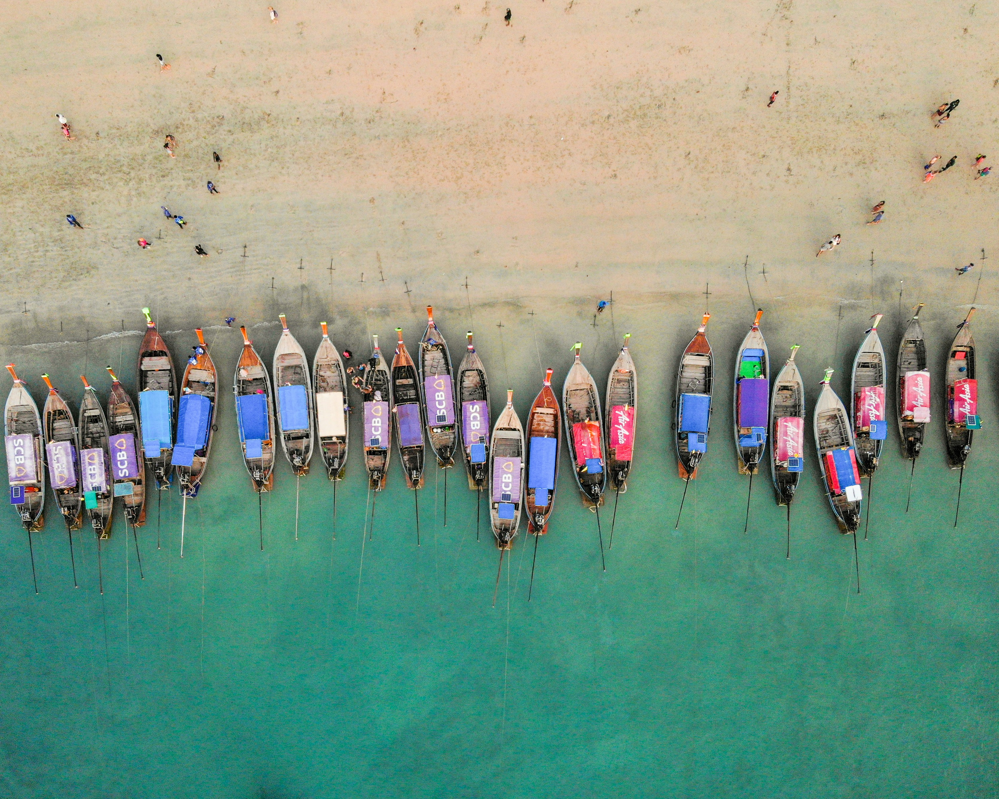
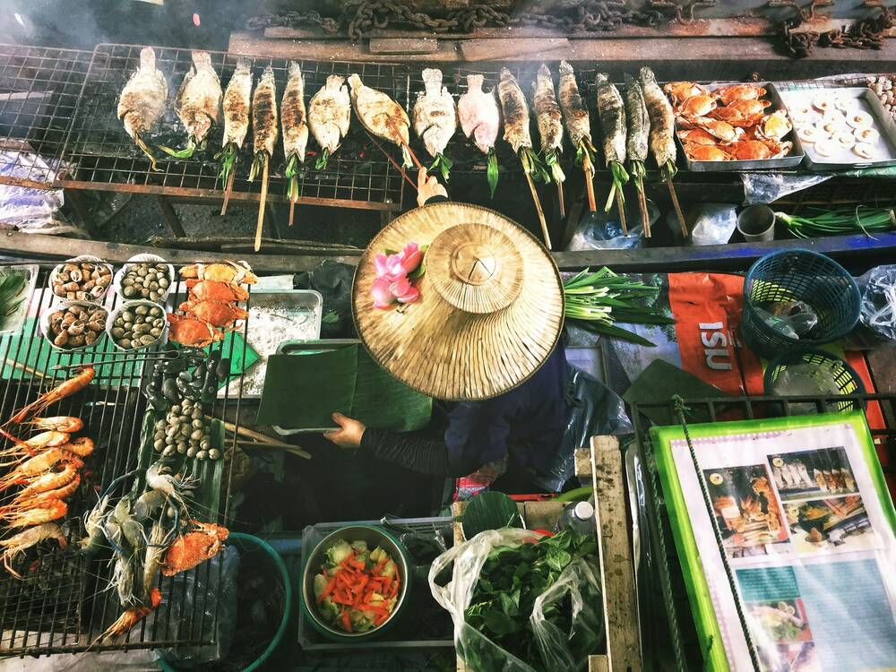

Welcome! If you are reading this then you are probably planning on going to Thailand! I had the opportunity to live in Thailand for 3 months at the end of 2023. One of the hardest parts of traveling is figuring out the best and cheapest ways to experience everything you want to! This website will hopefully give you some ideas on what to do, figure out the best places to stay and eat, and how to overall have a good experience in Thailand.


Where to go? Where should you even visit while in Thailand? There are so many amazing places you can visit in Thailand! Bangkok, Chaing Mai, Krabi, Sukhothai, Ban Mung, and Pattaya. Lets talk about my favorites and what I would recommend for anyone visiting these areas.
Bangkok: Bangkok is the capital of Thailand, there is so much culture, history, tons of people, and delicious food. While in Bangkok these are some of the things we did: went to the LDS Bangkok temple, walked around the King of Thailand's castle, ate at Chinatown, rode tuk-tuks, and went shopping at the Central Embassy Mall.
Chaing Mai: Chaing Mai was probably my favorite place we visited. Chaing Mai is very charming with lots of shopping and it's best known for its elephant sanctuaries! Chaing Mai had lots of yummy and charming restaurants, multiple elephant sanctuaries and amazing street markets almost every night!
Krabi: Krabi has the most beautiful beaches and the funnest nightlife. While in Krabi, we hiked to the tiger cave temple which leads to a beautiful outlook of the greenery surrounding the ocean next to Krabi. We ate nutella pancakes for $1 every morning, coconut ice cream at night, and yummy pad thai for dinners! We went to multiple beaches, with our favorite being Ao Nang beach which is just a ferry ride away!
Ban Mung: Ban Mung is a hidden gem in the northern part of Thailand that is not full of tourists and has a very unique beauty. There is a beautiful waterfall that locals swim around in that has multiple layers with pools at the bottom. We ate lunch at a charming sit down restaurant that looks out to the green mountains. What drew us to visit Ban Mung is being able to watch the bats come out of their cave at sunset. This was so unique and it is captivating to watch millions of bats fly out in a line with a beautiful sunset in the background.